(2019).
Genesis 1:1 shows us that the structural design of sentences is meaningful and can convey deeper layers of significance. Here, the number seven is introduced as significant alongside the structural importance of the central word. This same design structure is at work on the macro-level in Genesis 1: The first, middle, and final days all focus on the theme of time in a coordinated way. See how the symmetrical emphasis on time in Genesis 1 and the literary design of day four (1:14-19) connect in
the table below [adapted from Morales, Michael (2015). Who Shall Ascend the Mountain of the Lord? 44.]. The
narrative provides a foundation for all of Israel’s ritual calendar. A: Time B: Inhabitants C: Time + Inhabitants B': Inhabitants A': Time Day 1 Light and dark Day and night Daily Shema prayer Daily sacrifices in morning and evening Exodus 29:38-46 Day 2 Waters, sky dome Day 3 Dry land, plants Day 4 Sun and moon Day and night Annual festivals Annual feast days and sacrifices Leviticus 23 Day 5 Fish, birds Day 6 Dry land, plants Day 7 Sabbath day Jubilee cycle Sabbath ritual Jubilee year Leviticus 25-26 Design Emphasis on Time in Genesis 1. Created by Tim Mackie for BibleProject Classroom: Heaven and
Earth (2019).
Design of Day Four. Created by Tim Mackie for BibleProject Classroom: Heaven and Earth (2019).
This design highlights the structural significance of divinely-ordered time in Genesis 1. God provides the essential order (day one) and then delegates the maintenance of that order to others (day four), which is mirrored by the sacred calendar of Israel. All of this looks forward to and leads up to the Sabbath (day seven). Other Patterns of Seven in Genesis 1 In his book A Commentary on the Book of Genesis, biblical scholar Umberto Cassuto draws attention to patterns of seven in the first movement of Genesis. There are seven words in Genesis 1:1 and fourteen words in Genesis 1:2. There are seven paragraphs in Genesis 1:1-2:3 marked by “evening and morning.” The concluding seventh paragraph in Genesis 2:1-3 begins three lines which have seven words each (2:2-3a). 1 2 3 4 5 6 7 and-he- finished God one-the- day the- seventh his-work which he- made and-he- ceased on the day the- seventh from-all his-work which he- made and-he- blessed God the day the- seventh and-he- sanctified it Patterns of Seven in Genesis 1. Created by Tim Mackie for BibleProject Classroom: Heaven and Earth
(2019).
Each of the key words in Genesis 1:1 are repeated by multiples of seven in the opening movement of Genesis. “God” = 35x (7x5) in Genesis 1:1-2:3 “Land” = 21x (7x3) in Genesis 1:1-2:3 “Skies” and “dome” = 21x (7x3) in Genesis 1:2-2:3 Key words that are repeated seven times: "Light" (5x) and "day" (2x) = seven times on day one “Light” on day four “Living creature” (חיה) on days five and six “God saw that it was good” God speaks 10 times in Genesis 1:1-2:3. Seven of those times are divine creative commands to the creation itself: “Let there be” Three of those times are divine initiatives toward humanity: “Let us make ‘adam,” “be fruitful and multiply,” “behold I have given to you” “To suppose that all these appearances of the number seven are mere coincidence is not possible. This numerical symmetry is, as it were, the golden thread that binds together all the parts of the section.”
Cassuto, Umberto (1961). A Commentary on the Book of Genesis: Part I, From Adam to Noah (Genesis 1-6).
Magnes Press. 93-94. Why the Number Seven? Seven was a symbolic number in Israelite culture and literature. It communicated a sense of fullness or completeness (שבע “seven” is spelled with the same consonants as the word שבע, meaning “complete/full”). This makes sense of the pervasive appearance of seven patterns in the Bible. The Hebrew word “seven” is a homonym with the Hebrew words for “complete/full.” “Seven” = Hebrew sheva’ / שבע “Complete, full” = Hebrew sava’ / שבע “Oath, promise” = Hebrew savua’ / שבע The origin of seven symbolizing completeness possibly originates in the lunar calendar of moon cycles. The biblical Hebrew word for “month” is the same as “new moon” (חדש), a period of time made up of 29.5 days/month, consisting of four 7.3-day cycles, making a complete cycle of time. For more on this see Maurice H. Farbridge’s book The Biblical and Semitic Symbolism Of Numbers (Farbridge, 2010). However, the Israelite Sabbath cycle is independent of the moon cycle, and Sabbaths do not coincide with the new moon. Rather, the seven-day cycle in Genesis 1 is portrayed as the ideal complete time sequence of creation. It stands outside of any natural cycle of time (sun, moon, stars). Why Does God Rest on the Seventh Day? God’s rest involves a matrix of ideas connected with temples. God is taking up his rest within a sacred space by filling it with his divine presence. Two Key “Rest” Words Associated with Sabbath, Shabat and Nuakh When God rests on the seventh day, the text uses the word shabbat, which means “to stop.” Genesis 2:1-2 NASB* 1 Thus the heavens and the earth were completed, and all their hosts. 2 On the seventh day God completed his work which he had done, and he rested (Heb. shabbat) on the seventh day from all his work which he had done *Key Words Adapted by Teacher Shabat = “to cease from.” God ceases from his work because “it is finished” (Gen. 2:1). Compare Joshua 5:12, “the manna ceased (shabbat) on that day.“ By the time we get to Exodus, this same rest is associated with another word, nuakh, which means “to take up residence.” Exodus 20:11 NASB* For in six days the LORD made the heavens and the earth, the sea and all that is in them, and rested (Heb. nuakh) on the seventh day, therefore the LORD blessed the Sabbath (Heb. shabbat) day and made it holy. *Key Words Adapted by Teacher Both of these, shabbat and nuakh, become closely associated words in the Hebrew Bible used to evoke an image of God’s presence filling his temple and bringing peace. God’s rest involves a matrix of ideas connected with temples. God is taking up his rest within a sacred space by filling it with his divine presence. Exodus 10:14 NASB* The locusts came up over the land of Egypt and rested in all the land. *Key Words Adapted by Teacher Deuteronomy 12:10 ESV* When you cross the Jordan and live in the land which the LORD your God is giving you to inherit, and he gives you rest from all your enemies around you so that you live in security ... *Key Words Adapted by Teacher 2 Samuel 7:1 Instructor's Translation Now when King David dwelt in his house, for Yahweh had provided rest from his enemies ... In conclusion, when God or people nuakh, it always involves settling into a place that is safe, secure, and stable. Creation is depicted as the cosmic prototype in Genesis 1. All later temples are symbolic miniatures of this prototype. In each later biblical temple, God’s presence fills the sacred space on the seventh day. Creation and Sabbath Tabernacle Designs and Sabbath Tabernacle Completion and Sabbath Jerusalem Temple Completion Creation’s Completion (Gen. 1:31-2:3) Tabernacle Instructions (Exod. 25-31) Completion of the Tabernacle (Exod. 39-40) 1 Kings 6-8 Seven days open with divine command: “And God said …” Day 1 — Gen. 1:5 Day 2 — Gen. 1:8 Seven speeches open with divine command: “And Yahweh spoke to Moses …” Speech 1 — Exod. 25:1 Speech 2 — Exod. 30:11 Seven acts of obedience to the divine command complete tabernacle: “And Moses did … just as Yahweh Seven petitions of Solomon upon the completion of the temple: “Blessed be Yahweh who spoke to my father David.” Cosmic Prototype of Creation and The Tabernacle and Temple as Symbolic Miniatures. Created by Tim
Mackie for BibleProject Classroom: Heaven and Earth (2019).
Mackie for BibleProject Classroom: Heaven and Earth (2019).
Mackie for BibleProject Classroom: Heaven and Earth (2019).
Walton, John H. (2015). The Lost World of Adam and Eve: Genesis 2–3 and the Human Origins Debate. IVP
Academic. 75, 77. “Humanity’s elevation, made in the image of God, is designed for the exaltation of the Sabbath day. The Sabbath thus becomes the day for humanity to enjoy its privileged status of being created as God’s image. The Sabbath is the symbolic time for humanity’s climactic union with and representation of its Creator. ... Just as the divine work began with a workman’s week as an archetype of the human week, now humanity can live in the image of God. The Sabbath and the image of God are linked together and interdependent themes.”
Morales, Michael (2015). Who Shall Ascend the Mountain of the Lord?: A Biblical Theology of the Book of
Leviticus. IVP Academic. 48. Why Does God Bless the Seventh Day? God’s blessing upon the creatures and humans on days five and six is directly tied to being fruitful and multiplying and filling the land. By analogy, the blessing on the Sabbath would also involve a kind of fruitfulness, multiplying, and filling that is appropriate to a period of time. The idea is that the Sabbath would become many as it is observed and experienced by others. “Set apart from all other days, the blessing of the seventh day establishes the seventh part of created time as a day when God grants his presence in the created world. It is then his presence that provides the blessing and the sanctification. The seventh day is blessed and established as the part of time that assures fruitfulness, future-orientation, continuity, and permanence for every aspect of life within the dimension of time. The seventh day is blessed by God’s presence for the sake of the created world, for all nature, and for all living beings.”
Frey, Mathilde (2011). The Sabbath in the Pentateuch: an Exegetical and Theological Study. Andrews
University Digital Commons. 38. The Seventh Day That Has No End The seven days portray God working to bring order and life out of darkness and chaos. This divine work culminates in the delegation of human images who rule the fruitful land on God’s behalf (day six). Creation is “completed” (Gen. 2:1) only after God delivers creation from the darkness and chaos waters and appoints a human image to rule. After he completes creation, God can rest/cease from his work. “Unlike the previous days, the seventh day is simply announced. There is no mention of evening or morning, no mention of a beginning or ending. The suggestion is that the primordial seventh day exists in perpetuity, a sacred day that cannot be abrogated by the limitations common to the rest of the created order.”
Balentine, Samuel (1999). The Torah’s Vision of Worship. Fortress Press. 93.
“The seventh-day account does not end with the expected formula, 'there was evening and morning,' that concluded days one through six. Breaking the pattern in this way emphasizes the uniqueness of the seventh day and opens the door to an eschatological interpretation. Literarily, the sun has not yet set on God’s Sabbath.”
Lowry, Richard (2000). Sabbath and Jubilee. Chalice Press. 90.
“The Sabbath is that point in time where God and man meet. On the seventh day of creation, God joined himself and his eternal presence to his temporal creation, to the world of man. On the Sabbath day, man not only recalls but participates in an act of cosmic creation ... he experiences the original structuring of time within the microcosm of his own life. ... The observance of the Sabbath links humanity to a divinely ordained future, as well as a divinely created past. Sabbath observance has cosmic implications ... a foretaste of an eschatological future ... a prefiguration of the final phase of the divine/human reconciliation. In pointing back to the beginning, the Sabbath also points to what is yet to be, to the final destiny to which all creation is moving.”
Och, Bernard (1995). “Creation and Redemption: Towards a Theology of Creation.” Judaism: A Quarterly
Journal of Jewish Life and Thought. Volume 44 (No. 2). 240. “With regard to the lack of the final formula, 'there was evening and there was morning,' commentators have argued that the seventh day is not meant to be understood as a literal day. This argumentation then has led to an eschatological interpretation of the seventh day. However, as part of the first creation account, the seventh day is the last of the seven sections, and the formula 'there was evening and there was morning' in the account of the weekdays may be taken not only as a closing formula but also as a literary feature to anticipate what comes next within the series of sections in the creation account, that is the next day of the creation week. Functioning as a transition from one day to another the closing formula is a feature that moves the text forward throughout the six weekdays with the intention to arrive at the seventh day. Once it arrives at the last section, the text highlights the identification of the seventh day by stating it three times and then has no more need for the formula because there is no eighth section following for an eighth day. Creation has come to an end, for the seventh day has arrived.”
Frey, Mathilde (2011). The Sabbath in the Pentateuch: an Exegetical and Theological Study. Andrews
University Digital Commons. 38. Israel’s Sacred Calendar in Leviticus 23 In Leviticus, the Sabbath ideal is multiplied by seven. Leviticus 23 lists seven meeting/convocation days for Israel’s holy worship. Every one (except firstfruits) is a multiple of seven (in days or the month) or a duration of seven and represents a moment of new creation. Holy Day Date Duration Activity Ritual Story 1 Sabbath 7th day 1 day No work Creation and rest First Half of the Year 2 Passover and Unleavened Bread 1/14 1/15-21 1 day + 7 days No work on 1st and 7th day Exodus liberation into the promised land 3 Firstfruits Day after 7th day 1 day — Celebrating the gift of food 4 Weeks/Pentecost 7 x 7 + 1 days after Sabbath 1 day No work Celebrating the gift of food Second Half of the Year 5 Trumpets 7th month / 1st day 1 day No work Marking the 7th month Israel’s Sacred Calendar in Leviticus Chapter 23. Created by Tim Mackie for BibleProject Classroom:
Heaven and Earth (2019).
Heaven and Earth (2019).
The principle of the Sabbath (a burst of Eden rest into ordinary time) is here multiplied by seven. All these holy days participate and develop some aspect of meaning of the original Sabbath. Passover and Unleavened Bread celebrate redemption from death (new creation) and commitment to simplicity and trust in God’s power to provide food in the wilderness. Firstfruits and Weeks celebrate the gift of produce from the land. Trumpets announces the sabbatical (seventh) month. Day of Atonement celebrates God’s renewal of the holiness of his Eden presence among his compromised people. Tabernacles celebrates provision for God’s people on their way to the promised land/Eden. They are to live in God’s “tent” for a Sabbath cycle. Leviticus 23:40 says, “And you will take the fruit of the beautiful tree, the branches of a palm, and branches of a tree of leaf and of poplar trees by a river, and you shall rejoice before Yahweh for seven days.” This is a mini-Eden tent made of the fruit of a beautiful tree for a Sabbath cycle (Gen. 1-2)!
What is the significance of God resting on the seventh day of creation?
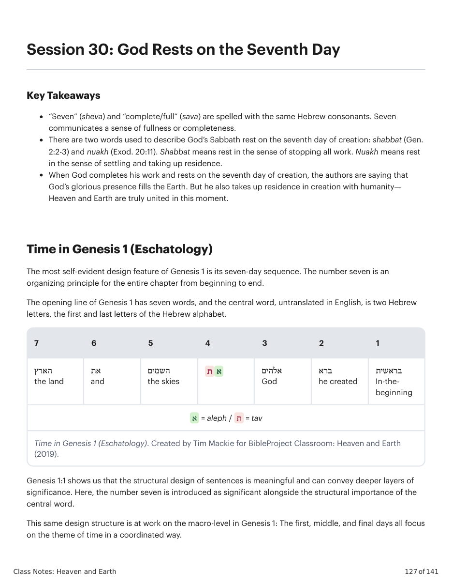
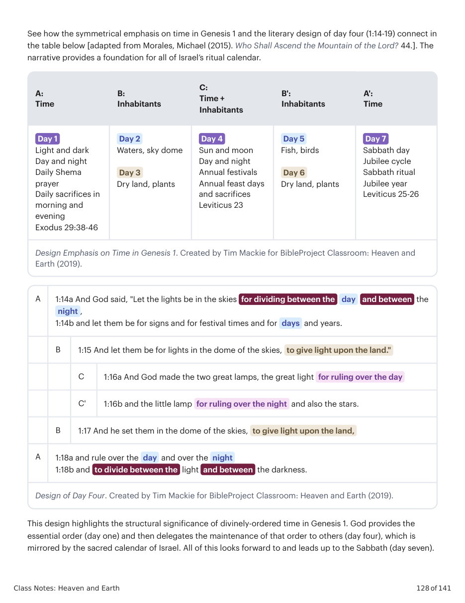
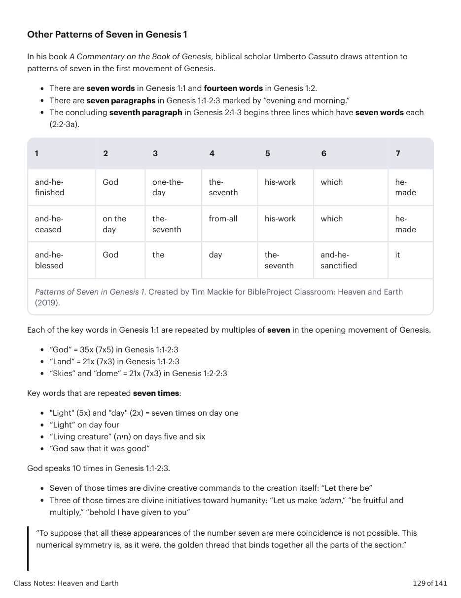
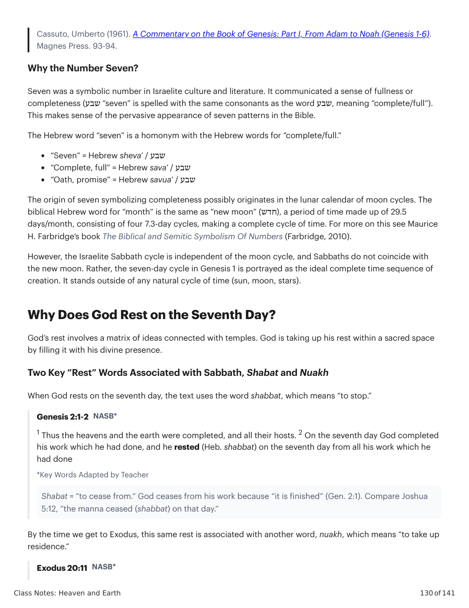
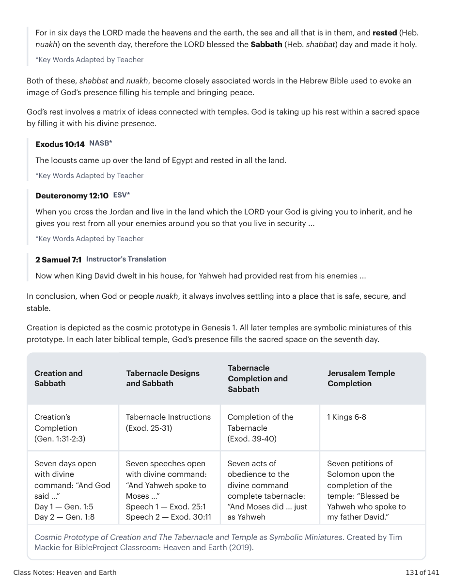
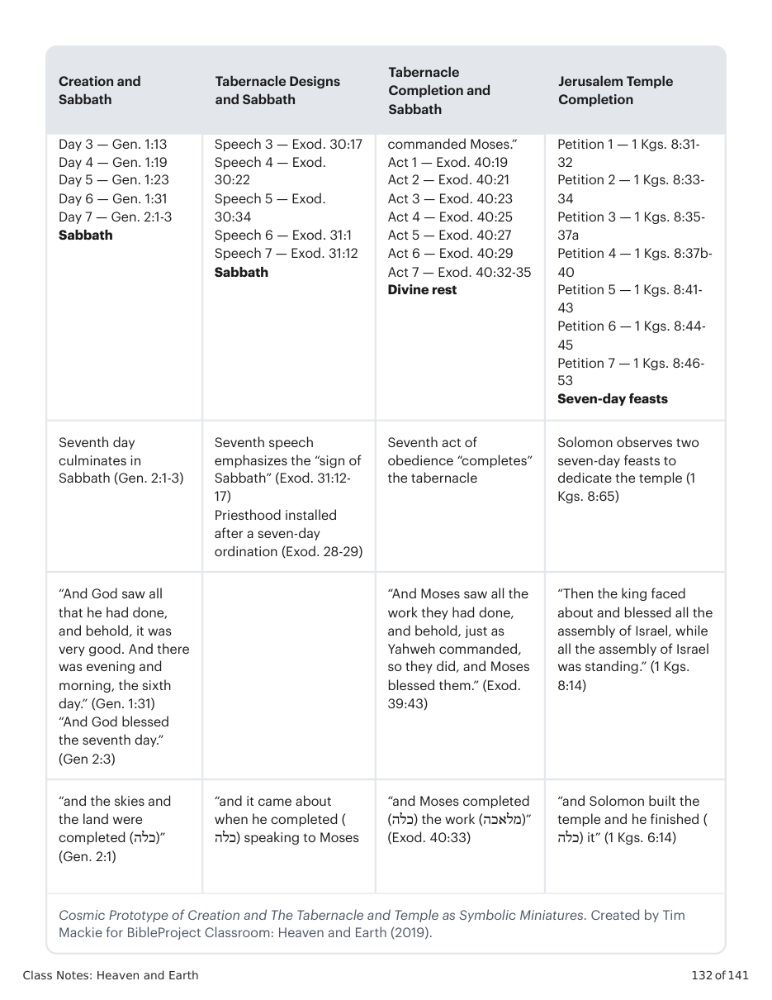
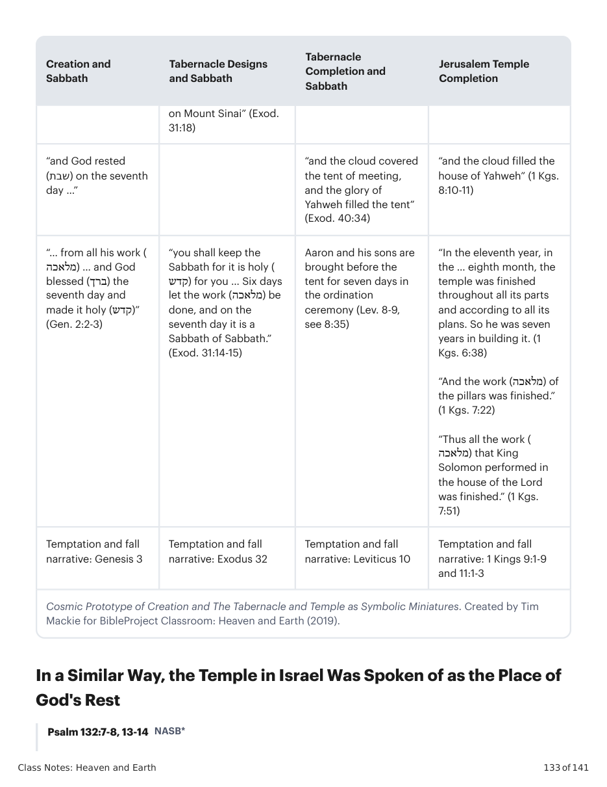
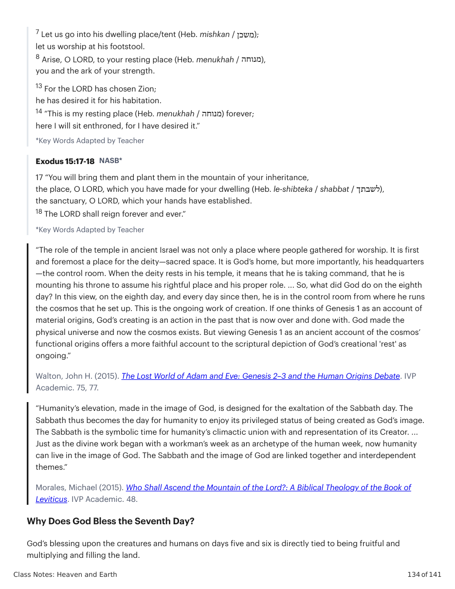
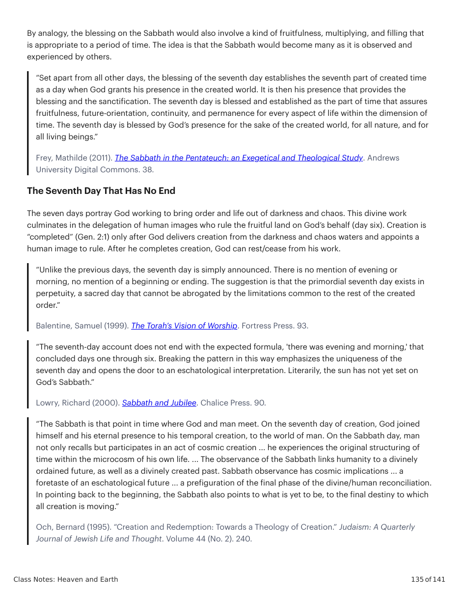
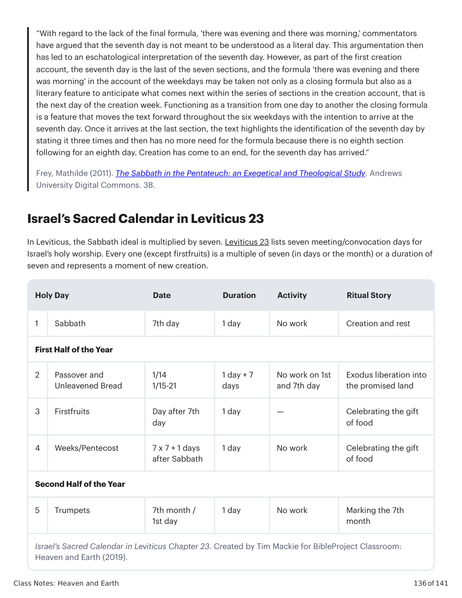
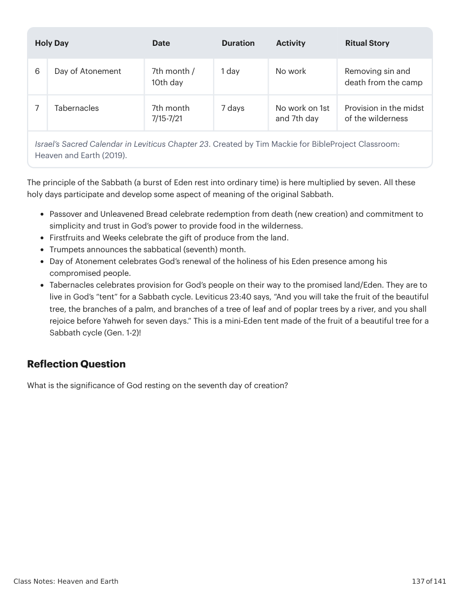